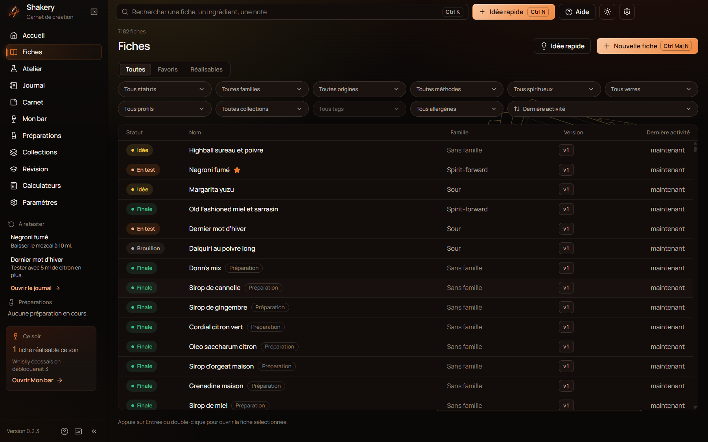

Shakery · refonte ergonomique · planche 02 sur 1024 novembre 2026
Fiches, mes créations d’abord
Avant

Ce qui change
- Le bouton Idée rapide de l’en-tête disparaît puisqu’il est déjà dans la barre du haut, et Nouvelle fiche reste le seul bouton plein de la page.
- Le sélecteur devient Mes fiches (6, affiché par défaut), Classiques (7 176), Favoris et Réalisables, pour que tes créations ne soient plus noyées parmi les classiques.
- Seuls Statut, Famille et Spiritueux restent visibles ; les autres filtres passent derrière un bouton Plus de filtres qui indique leur nombre (6), et le tri reste à droite sur la même ligne.
- Le filtre Origine disparaît, car le sélecteur Mes fiches et Classiques fait déjà ce tri.
- La colonne Version est repliée ; la version s’affiche en petit à côté du nom seulement à partir de la v2 (Dernier mot d’hiver v2, Old Fashioned miel et sarrasin v3).
- La liste sort de sa carte bordée ; l’en-tête et les lignes sont séparés par des filets et alignés sur le bord gauche du titre.
- La colonne Dernière activité montre des dates variées et crédibles (hier, il y a 3 jours, 18 nov.) à la place de « maintenant » sur toutes les lignes.
- Une ligne en fin de liste rappelle que les classiques sont rangés à part, avec un lien Parcourir les classiques.
- Une famille inconnue s’affiche par un petit trait dessiné au lieu du texte « Sans famille ».
- Le motif de fond de la page passe à 12 % d’opacité, parce que sans carte il passait derrière les lignes.
À trancher
- Le filtre Origine peut-il disparaître au profit du sélecteur, ou sert-il encore à distinguer autre chose que tes créations et les classiques ?
- Les trois filtres visibles (Statut, Famille, Spiritueux) sont-ils ceux que tu utilises le plus, ou faut-il en sortir un autre de Plus de filtres ?
- Veux-tu aussi un nombre à côté de Favoris et de Réalisables dans le sélecteur ?